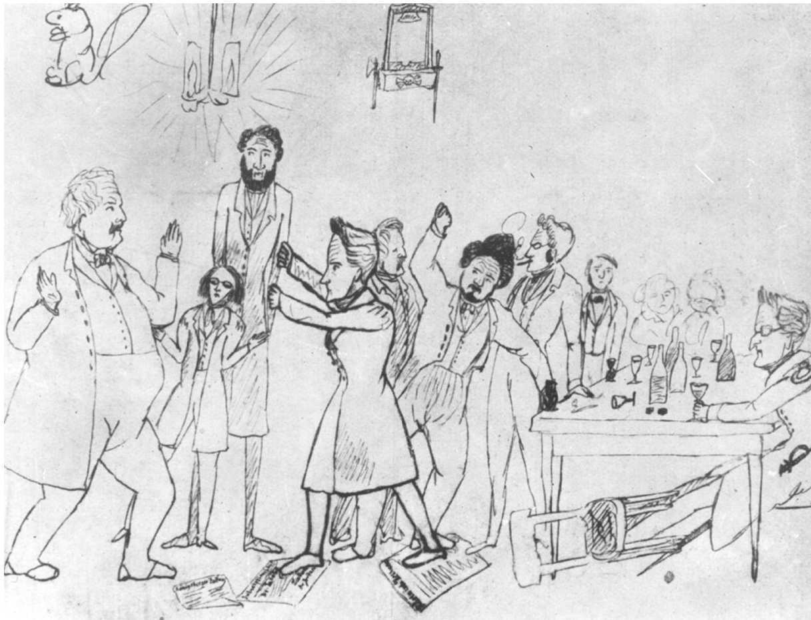
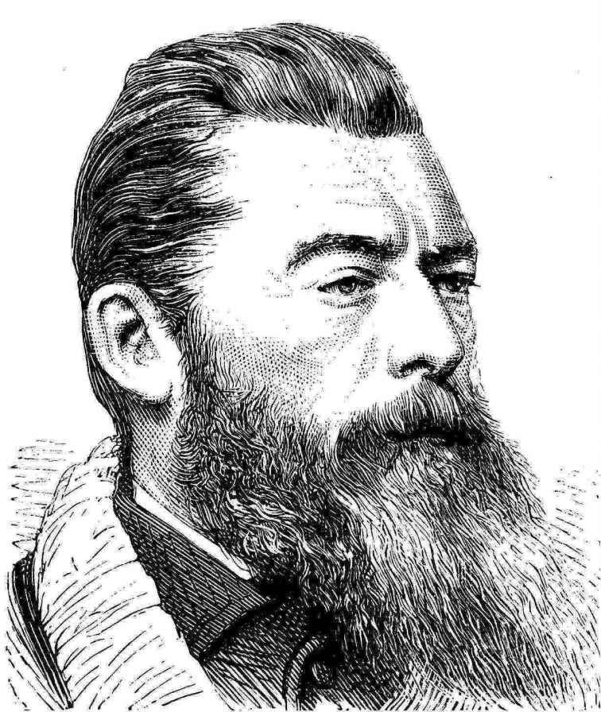

黑格尔去世后，那些自视为其追随者的人分成了两个阵营。正统黑格尔派或黑格尔右派遵循其晚年风格，把他的宗教观点与基督教新教调和起来，并且接受《法哲学原理》中对普鲁士国家总体上正面的看法。这个保守的黑格尔主义学派没有产生什么重要的思想家，在柏林以半官方哲学的地位维持几年之后便迅速衰落，以致到了19世纪60年代，黑格尔哲学在德国已经完全过时。
另一个阵营则非常不同，它由一群思想激进的青年人组成。他们对黑格尔的态度就像黑格尔对康德的态度。就像黑格尔一直认为康德的自在之物学说未能完成其哲学的根本含义，黑格尔的这些弟子也认为，黑格尔接受基督教、普鲁士国家和他那个时代的一般状况，也是未能完成其哲学的根本含义。这群人被称为青年黑格尔派或黑格尔左派，未来取决于他们。
青年黑格尔派认为黑格尔的哲学在要求一个更美好的世界。这是一个合理组织起来的世界，一个真正自由的世界，个人与社会之间的对立将被克服。简而言之，这个世界可以反映出人类精神及其理性力量的绝对至上。在青年黑格尔派看来，这个更美好的世界并不单纯是一种幻想出来的乌托邦理想，而是黑格尔体系的历史与哲学论证的最终完成。它是一种辩证的必然性，是一个必定会出现的合题，以使他们那个世界中的各种对立因素得以调和。

图19 青年黑格尔派在争论，恩格斯（1820-1895）绘
对于那种认为19世纪30年代的德国已经实现了黑格尔哲学承诺的想法，青年黑格尔派嗤之以鼻，他们着手实现自己的激进看法。首先他们把宗教看成对一个可以使人充分发挥潜力的社会的关键障碍。通过发展《精神现象学》“苦恼意识”一节中的线索，他们指出宗教是一种异化形式。人创造了上帝，然后又想象上帝创造了自己。人把他自身之中所有最好的东西——知识、善和力量——都赋予了他的上帝形象，然后又在他自己创造的这个形象面前顶礼膜拜，而把自己看成无知、有罪和软弱。要使人类恢复其完整力量，只需使他们认识到，人类才真正是神性的最高形态。
为此，两个青年黑格尔派撰写了对19世纪宗教思想有巨大影响的著作。大卫·弗里德里希·施特劳斯写了一本卓越的《耶稣传》。通过把福音书作为历史批判的原始材料，他给后来关于历史上的耶稣的所有研究树立了典范。路德维希·费尔巴哈的《基督教的本质》则把一切传统宗教都说成人把自己的属性投射到另一个领域，遂成为发展一种宗教信仰心理学的第一次现代尝试。早在黑格尔本人的著作在德国以外还几乎不为人所知时，由玛丽安·埃文斯（她还协助翻译了施特劳斯的著作，以笔名乔治·艾略特广为人知）译成英文的这部著作已经有了广泛的世界影响。
接着，青年黑格尔派越过了宗教。费尔巴哈以更为激进的方式，用黑格尔的思想来反对黑格尔。他指责黑格尔以一种神秘的方式来给出关于世界的真理。黑格尔相信精神是终极实在，所以一直把世界中的不和谐问题看成思想领域中的一个问题，因此认为哲学能够解决它。现在费尔巴哈把黑格尔颠倒过来。不能由思想推导出存在，而应由存在推导出思想。人的真正基础并不在精神，反倒是精神的真正基础在人那里。黑格尔的哲学本身是一种异化形态，因为他把实际的活生生的人的本质当成了某种外在于他们自身的东西——“精神自身”。费尔巴哈说，我们既不需要神学，也不需要哲学，而是需要一种研究现实生活中实际的人的科学。
此时距离青年黑格尔派的著作使黑格尔思想的要素对世界历史产生持久影响已经为期不远了。黑格尔去世后大约六年，卡尔·马克思来到了柏林大学。很快他便结识了青年黑格尔派，并参与了当时流行的宗教批判。当费尔巴哈宣称需要超出思想领域时，马克思热情回应了这一号召。在《1844年经济学哲学手稿》中，马克思称赞了黑格尔《精神现象学》关于异化和劳动重要性的论述，然后发展出了他自己关于资本主义制度下劳动作为主要异化形式的看法。马克思指出，要使人类获得解放，就必须消除异化劳动；而要消除异化劳动，就必须废除私有财产和与之伴随的工资制度：换句话说就是建立共产主义。

图20 路德维希·费尔巴哈（1804-1872）
在年轻时写的《1844年经济学哲学手稿》中，马克思用所有黑格尔主义者都很熟悉的术语描述了共产主义：
到了晚年，马克思使用的黑格尔术语没有那么多了，但他从未放弃他通过改造黑格尔哲学所达到的对共产主义的看法。
假使已故的思想家们死而复生，看到他们的思想产生了什么后果，猜测一下他们会说些什么，这即便无益也是很有趣的。很少有人会像黑格尔那样吃惊地看到，其哲学的历史顶点并非对绝对理念的领悟，而是一百多年来在全世界激起革命运动的一种对共产主义社会的憧憬。